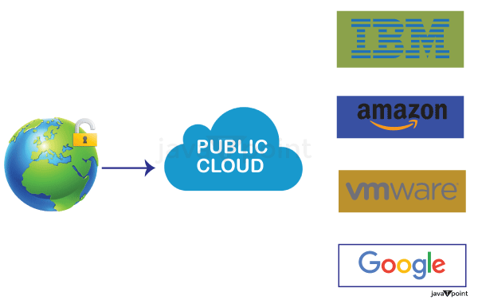
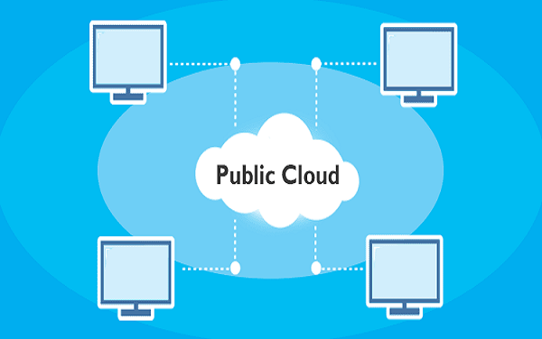

Public Cloud

Public Cloud Explanation
A public cloud is hosted, operated, and managed by a third-party vendor (CSP) from one or more data centers.
- The CSP manages infrastructure and ensures scalability.
- Anyone with an internet connection can use it.
- Examples: Amazon EC2, IBM Smart Cloud, Microsoft Azure, Google App Engine.
Public Cloud Components:
- Compute Resources
- Storage & Databases
- Networking
- Security & Identity Management
- Monitoring & Management
- AI & Big Data

Examples:
- AWS
- Microsoft Azure
- Google Cloud Platform
- Dropbox
- Salesforce
Advantages:
- Low Cost
- Rapid Deployment
- High Scalability
- Easy Maintenance
- Reliability
Disadvantages:
- Low Security
- Performance Issues
- Less Customization
- Difficult Migration